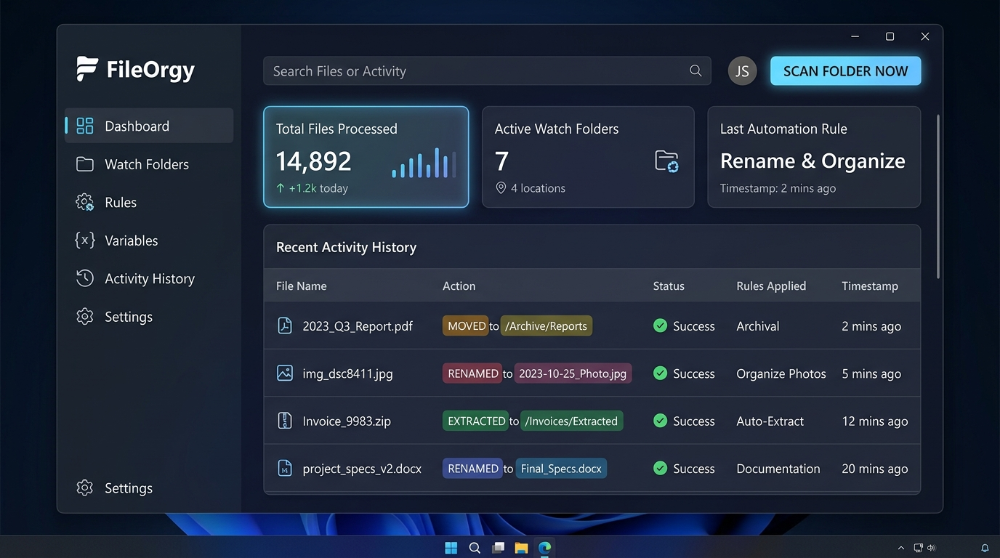

The automatic file organizer for Windows
FileOrgy watches your Downloads folder and sorts every new file into place: installers, documents, archives, photos, videos and music. It renames invoices by date, extracts ZIPs and cleans up old clutter on its own.

Everything your Downloads folder needs
Set it up once. FileOrgy runs quietly in the system tray and keeps your folders organized.
Auto-sort by file type
New files go into Programs, Documents, Compressed, Pictures, Videos, Audio or Others inside the same folder.
Rename invoices by date
Reads dates inside PDF, Word and Excel files and renames them, e.g. 2026-09-14_invoice.pdf.
Auto-extract archives
Unpacks ZIP, RAR, 7z, TAR and multipart archives, then sends the original to the Recycle Bin.
Photos by year & month
Uses EXIF dates to file photos into 2026\09 folders without overwriting duplicates.
Safe cleanup
Removes old files and empty folders through the Windows Recycle Bin, so nothing is lost for good.
Multi-step workflows
Chain steps such as extract, read content, rename and move into one rule, with a friendly visual editor.
Right-click to organize
"Organize with FileOrgy" in File Explorer cleans any folder in one click.
Real-time & lightweight
Uses Windows kernel change notifications, not polling. It waits until downloads finish before it touches them.
Auto-updates
Checks GitHub for new releases and installs them in a couple of clicks.
Seven tidy folders, zero effort
The built-in in-place rules sort the root of any watched folder. Existing subfolders are left alone.
How it works
Three steps, about a minute.
Install
Run FileOrgy-Setup.exe. Choose whether to start with Windows, start in the tray, and add the Explorer right-click menu.
Pick your folders
Downloads is watched out of the box. Add Desktop, Documents or any other folder from the Watch Folders tab.
Forget about it
New files are organized as they arrive. On startup, FileOrgy also catches up on anything that arrived while it was off.
Frequently asked questions
How do I automatically organize my Downloads folder on Windows?
Install FileOrgy and keep the default Downloads watch folder enabled. New downloads are sorted into Programs, Documents, Compressed, Pictures, Videos, Audio and Others subfolders as soon as they finish downloading. Click Scan Monitored Folders to organize files that are already there.
Is FileOrgy free?
Yes. FileOrgy is free and open source under the MIT License.
Does it slow down my PC?
No. It uses Windows kernel change notifications instead of polling, so it uses 0% CPU while idle and about 18–25 MB of RAM.
Can it rename PDF invoices by date?
Yes. The built-in "Organize Invoices & Receipts" rule reads the date inside PDF, Word and Excel files, renames them like 2026-09-14_invoice.pdf and files them into year and month folders.
Will it delete my files?
Only if you create a cleanup rule, and even then files go to the Windows Recycle Bin by default so you can restore them.
Is it an alternative to DropIt, File Juggler or Hazel?
Yes. Like those tools, FileOrgy uses rules to move, rename and clean up files automatically. It's free, open source and built natively for Windows 10 and 11.
Give your Downloads folder a break
Free download for Windows 10 and 11 (64-bit).